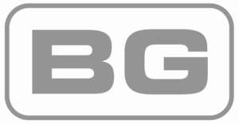

Trade Mark Journal No.2025/036 5 September 2025
UK00004241870 30 July 2025 (9)
Mark 1
BG
Mark 2
Mark 3

- Class 9
- Electrical and electronic apparatus, instruments and components, namely apparatus and instruments all for the control, supply, monitoring, storage and distribution of electric power or electrical current; electric plugs; electric sockets; power supplies; batteries; power charging apparatus; portable electric power equipment; USB ports and sockets; HDMI and audiovisual outlets; chargers; electric charger modules; electric switch modules; power modules; electric adaptors; power and plug adaptors; electric switch plates; electrical outlet plates; decorative switch plate covers; electrical switchgear; electrical timers; electric wires, electric leads and electric cables; reels for electric cables; telecommunications cables; connectors, couplings, junction boxes, bends, elbows, tees and adaptors all for use with ducting, trunking and conduits; ducting and conduit systems for electrical cables; apparatus for electric cable and wire management; switches; fuses; fuse boxes; fuse boards; circuit breakers and earth leakage breakers; relays; consumer units; busbar chambers; voltage stabilizers; transformers; weatherproof switches, connectors, junction boxes, sockets, plugs and power kits; outdoor sockets; electric socket outlets; telecommunications sockets and connectors; fused connection units and plugs, satellite and coaxial socket outlets; telephone and data socket outlets; telephone adaptors, telephone extension kits; telephone junction boxes, telephone connection tools, data cables and modems; electrical distribution units comprising assemblies of plugs, sockets, switches, fuses, indicator lamps and cables; distribution boards, distribution boxes and junction boxes, all being electric; surface mounting boxes for electrical switches, sockets, plugs, cables and apparatus for control, monitoring and distribution of electric power or electrical current; electric bells and timers; electronic communication apparatus and installations; testing apparatus and installations, control consoles for lighting apparatus and installations, remote control apparatus for lighting unit, infra red lighting controller units, extension leads; light switches; shave sockets; dimmer switches; cooker connection units; cooker control units; LEDs; telecommunications instruments and apparatus; telecommunications and wireless signal boosters; telecommunications transmitters; wireless communication devices; wireless transmitters; alarms; software; electronic publications; telecommunications instruments and apparatus; telecommunications and wireless signal boosters; telecommunications transmitters; wireless communication devices; wireless transmitters; alarms; charging stations; charging stations for electric vehicles; electric power connectors to charge electric vehicles; mobile plug-in electric power connectors to charge electric vehicles; batteries; solar batteries; inverters; inverters used in solar power generation; apparatus for measuring solar cell efficiency and electric current; electricity connectors used in solar power generation; current converters concerning solar energy; computer software for monitoring and controlling the aforesaid goods; smartphone software for monitoring and controlling the aforesaid goods; electronic publications; parts, fittings and accessories for all the aforesaid goods.
Luceco UK Limited
Representative: Marks & Clerk LLP